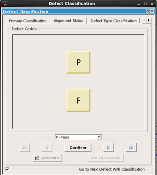

After entering inputs and run settings, specifying run configuration settings, and clicking Submit, a run is initiated. During the run, several actions are performed:
Calculation of shiftX and shiftY required for layout alignment.
Output of aligned images in output directory.
The defect list is updated with shifted layout coordinates.
The stacked wafer file is loaded into Calibre DefectReview with updated systemX and systemY values, and displays the following images in the Image Measurement Unit (IMU):
Sem — The original SEM image.
Aligned Sem — The original SEM image on which aligned layout contours are overlaid by clicking the Display layout contour on SEM image icon in the IMU tool bar.
Layout — The layout image corresponding to the SEM image after alignment.
Layout Inverted — The inverted layout for cases when SEM images have inverted polarities for patterns and background regions (patterns are darker than background region).
The images listed are not shown by default; you must configure the IMU display to be able to see these images. The images are listed under Other Images in the right-click menu found in any IMU.
After the run is completed, the Alignment status column is populated in the Defect List.
The following columns are updated:
Column |
Description |
|---|---|
Shift X (um) |
Specifies the X-coordinate shift value after the run. |
Shift Y (um) |
Specifies the Y-coordinate shift value after the run. |
Original Layout X (um) |
Specifies the original X location of the image center in the layout. This value is calculated by adding the Layout X (um) value to the Shift X (um) value. |
Original Layout Y (um) |
Specifies the original Y location of the image center in the layout. This value is calculated by adding Layout Y (um) value to the Shift Y (um) value. |
Confidence Metric |
It is not always possible to review each image manually to check whether the alignment is correct or not. The confidence metric automates the process of reviewing results. By checking these values, you can determine how good or bad the alignment is. The values are expressed as a percentage. |
Alignment Status |
Provides a quick check of the alignment result. The possible values for this column are Pass, Fail and Review. The values are determined based on the Pass and Review thresholds applied to the confidence metric value. These two threshold values are taken as input in the configuration file. The default threshold value is 75 for Pass, and 50 for Review. For example, a confidence metric of above 75 results in Pass, between 50 and 75 results in Review, and below 50 translates to Fail as the alignment result. You can modify the Alignment Status for each defect based on a manual review using the Alignment Status tab in the Defect Classification window. Figure 2. Alignment Status Review
 Note:
The Alignment Status value is present in the Defect List only for defects with a SEM image. |
For defect locations that do not have SEM images, the tool populates the Shift X and Shift Y columns with an common offset calculated by the tool. The offset is calculated using one of two methods: global or local. These methods are described in the “Global Offset” and “Local Offset” sections in this topic.
A global offset is a common shift value calculated by considering shift values obtained from high quality alignment of defects with SEM images and their respective design patterns. The quality of alignment is determined using a confidence metric. X and Y shift values can be considered as points in a 2-dimensional coordinate space (that are clustered) and the center of gravity (CoG) of the densest cluster is chosen as the global offset. For SEM images with repeated patterns, multiple shift values similar to the best shift value are considered for clustering.
Global offsets can be used to assign Shift X and Shift Y values for defects without SEM images when the search_mode argument in the Image-to-Layout run configuration file is set as global. Figure 3 shows an example global offset.
The global offset value is also used to fine tune the alignment location for defects with SEM images. In this case, the override_global_offset argument in the Image-to-Layout run configuration file is set as false (default).
For defect IDs with SEM images that are not aligned correctly (with a low confidence metric), the global offset value is used as the alignment shift. This can be deactivated by setting the Image-to-Layout run configuration file argument set_align_fail_to_global to 0. The shift values are not replaced by a global offset.
The following issues apply to global offsets:
Given the multiple applications of the global offset, the offset calculation is always enabled in the alignment flow.
If the data set does not contain enough defects with SEM images that are correctly aligned, the tool does not calculate the global offset and X and Y are set to (0, 0).
A local offset is calculated only for defects that do not have SEM images. Unlike the global method, the local method calculates the shift for each entry separately.
For each defect without a SEM image, the local offset is calculated from the n number of nearby neighbors with SEM images that have good alignment scores (based on the confidence metric). The n value is specified using the min_defects_in_search argument in the Image-to-Layout run configuration file. Calibre DefectClassify uses the WaferX and WaferY coordinates to identify the neighbors. Figure 4 shows the shifts of defects without SEM images are dependent on the shifts of neighboring defects with SEM. In this case, the min_defects_in_search value is 3.